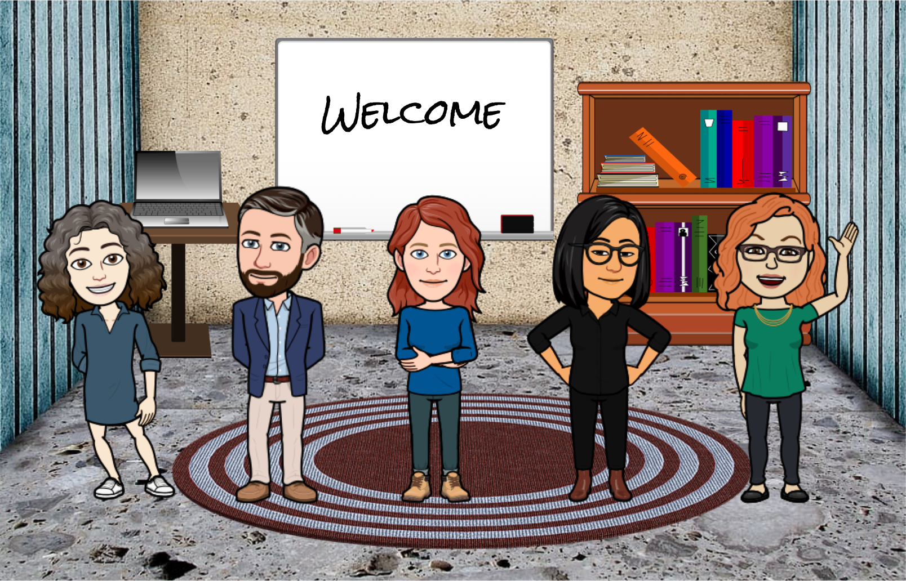

Welcome¶
Welcome to the Engineering & Physical Sciences Libraries’ virtual Online Library Tutorials (vOLT). Whether you’re searching for articles, streamlining your research workflows, or organizing data, citations and writing, we have expertise and resources to help you.
The sections of this guide are designed to help you manage various aspects of the research process. If you have questions about this guide or the resources described, you are welcome to ask a Science Librarian. Additional resources can also be found on the Library’s guide to Research Support and on the Library’s list of Guides and Tutorials.
Meet your virtual team!¶
{kind=link}

Sam Teplitzky
Open Science Librarian
Subject Areas: Earth & Planetary Science, Geology and Geophysics

Anna Sackmann
Science Data & Engineering Librarian
Subject Areas: Bioengineering, Electrical Engineering, Materials Science & Engineering

Brian Quigley
Head, Engineering & Physical Sciences Division
Subject Areas: Computer Science, Logic & the Methodology of Science, Mathematics, Statistics

Susan Powell
GIS & Map Librarian
Subject Areas: Geography, GIS & Maps

Lisa Ngo
Engineering Librarian
Subject Areas: Applied Science and Technology, Civil and Environmental Engineering, Engineering, Environmental Engineering, Industrial Engineering & Operations Research, Mechanical Engineering, Nuclear Engineering, Ocean Engineering

Kristen Greenland
Chemical & Physical Sciences Librarian
Subject Areas: Astronomy & Astrophysics, Chemistry, Chemical & Biomolecular Engineering, Physics